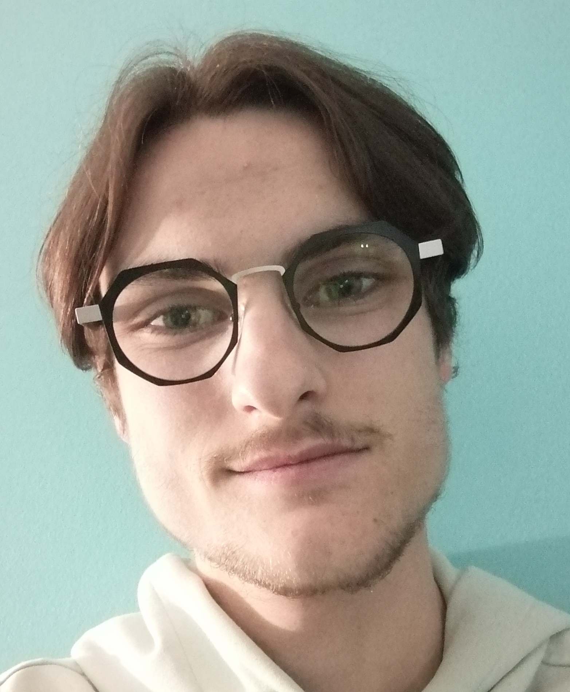

Bienvenue sur mon portfolio

Clément Dubois
À propos de moi
Développeur Web Full Stack en devenir
Allier performance technique et respect des utilisateurs
Mon parcours
Depuis mon plus jeune âge, l'informatique a été bien plus qu'une simple discipline scolaire - c'est une passion qui a façonné mon parcours. Tout a commencé en classe de 4ème, lors de ces cours de technologie qui m'ont révélé le monde fascinant du numérique. Cette étincelle initiale s'est transformée en une véritable vocation, me poussant à choisir la filière STI2D au lycée Dhuoda de Nîmes, avec une spécialisation en Système d'Information et du Numérique. L'obtention de mon baccalauréat avec mention Bien en 2023 a marqué l'aboutissement de cette première étape, mais surtout le début d'une aventure plus grande encore.
Mon engagement pour un numérique plus responsable
Mon engagement pour un numérique plus responsable s'est concrétisé avec la découverte de Qwant. Ce moteur de recherche européen, basé en France, a été pour moi une révélation : il était possible de concilier technologie performante et respect de la vie privée. J'ai alors commencé à promouvoir activement cette alternative éthique, renforçant ma conviction que le numérique doit servir l'humain sans compromettre ses données personnelles. Cette prise de conscience a profondément influencé ma vision du développement web.
Mon parcours académique
Aujourd'hui étudiant en BUT Informatique à l'Université de Montpellier, j'ai choisi ce parcours pour son excellence académique et son accompagnement personnalisé. Le parcours RACDV me permet d'approfondir mes compétences en développement full stack, tandis que les méthodes agiles apprises m'ont permis de contribuer à des projets concrets comme VoxPopuli, une plateforme de vote démocratique où j'ai particulièrement travaillé sur la sécurité des données utilisateurs.
Mes passions
Au-delà du code, je cultive plusieurs passions qui enrichissent ma vision du développement. L'innovation numérique éthique est un domaine qui me tient particulièrement à cœur, tout comme l'étude des bonnes pratiques en cybersécurité et protection des données. Les jeux vidéo, quant à eux, ont été une école de logique algorithmique et d'expérience utilisateur, tandis que le sport m'aide à garder l'équilibre nécessaire dans ce métier exigeant.
Mon projet professionnel
Mon projet professionnel est clair : devenir développeur web full stack spécialisé dans la création d'applications à la fois performantes et respectueuses des utilisateurs. Je veux maîtriser aussi bien le front-end que le back-end, en accordant une attention particulière à la protection des données et à l'accessibilité. Après mon BUT, j'envisage d'intégrer une école d'ingénieur ou une formation spécialisée en développement éthique, avec l'objectif de travailler dans des entreprises innovantes qui partagent mes valeurs.
Ma motivation
Ce qui me motive particulièrement, c'est l'idée de contribuer à un web plus responsable. Que ce soit à travers le développement d'applications SAAS respectueuses des données, l'intégration d'IA éthique, ou la promotion de l'accessibilité numérique, je veux mettre mes compétences techniques au service d'un numérique plus humain. Mon parcours avec le projet Voxpopuli et mon engagement pour Qwant ne sont que les premières étapes de cette ambition.
Mes études
2020-2023
Lycée Technologique Dhuoda à Nîmes
2023-2027
Université Technologique de Montpellier spécialité informatique
Mes Projets
2025 - 2026
Projet site de vote - VoxPopuli :
Au cours de mon enseignement à l'université, j'ai été amené à réaliser un site web de vote de démocratie participative. J'ai crée ce site web en contactant le client afin de réaliser un site qui lui correspondent.
Voir le projet2024 - 2025
Projet escape game :
Au cours de mon enseignement à l'université, j'ai dû réaliser un site web de promotion d'un escape game proposer par un groupe de l'université. Le thème de cette escape game est les pyramides. J'ai crée ce site web en contactant mes clients afin de réaliser un site qu'ils leur correspondent.
Voir le projetProjet réalisation d'un site présentant une controverse :
J'ai été réaliser en amont une controverse à l'aide d'une recherche documentaire que j'ai mené. Le sujet est sur le biais des algorithmiques. Pour suite, j'ai réalisé le site afin de présenter cette controverse.
Voir le projetMes dernières actualité :
Contactez-moi
CV : Télécharger mon CV
Email : Me contacter par mail
LinkedIn : Mon profil LinkedIn